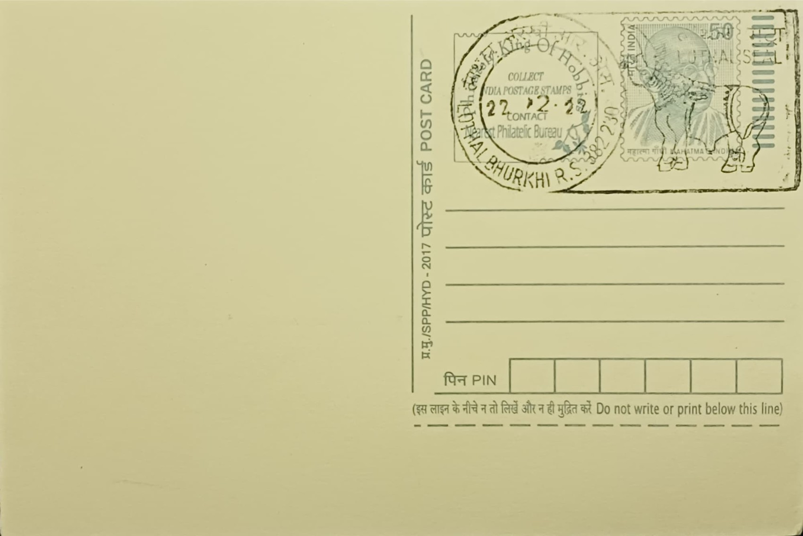

Lothal Seal
લોથલ મુદ્રા


The term "Lothal seal" does not refer to a single object but to a class of small stamp seals recovered from Lothal, a Harappan site in the Bhal region of Gujarat whose name in Gujarati loosely translates to "mound of the dead," echoing the more famous Mohenjo-daro. The site was first noticed in 1954 and excavated between 1955 and 1960 by archaeologist S. R. Rao of the Archaeological Survey of India, whose team uncovered a planned township of the mature Harappan phase, dated to roughly 2400 to 1900 BCE, built on the dried-up course of the Sabarmati's tributary channels near the Gulf of Khambhat.
These seals belong to the broader corpus of Indus Valley sealing practice, carved chiefly from steatite in square or occasionally circular form, and are significant because they supply some of the clearest material evidence of Lothal's function as an administrative and mercantile outpost rather than a purely residential settlement. Most bear a single animal motif, commonly a unicorn-like bull, alongside a short line of undeciphered Indus script, and were pressed into clay to seal bundles, jar stoppers, or packages of goods, marking ownership or authorisation in a manner comparable to later customs stamps. Their recovery alongside weights, beads, and a dockyard basin helped establish Lothal's standing as one of the few confirmed Harappan port towns.
Among the finds, a distinct circular "Persian Gulf type" seal drew particular scholarly attention after its resemblance to seals excavated on Bahrain and other Gulf islands by a Danish expedition was noted; S. R. Rao published this identification in 1963, arguing it was physical proof of direct trade contact between Lothal and Dilmun-era Gulf entrepots rather than mere stylistic coincidence. Such seals, along with an Egyptian-styled object and a Mesopotamian-style head found at the same site, support the view that Lothal's merchants traded carnelian beads, ivory, and other goods along routes extending toward Mesopotamia and the Arabian Gulf, supplementing the Indus script seals that dominate the broader assemblage from the site.
A particularly distinguishing feature of the Lothal excavation is the adjoining brick-built basin identified by Rao as a tidal dockyard, measuring roughly 214 metres by 36 metres, which he linked functionally to the sealing system: incoming and outgoing cargo moved through a warehouse area north of the basin, where numerous sealings and seal impressions were concentrated, suggesting a point of inspection and registration for goods entering or leaving the port. This interpretation, while influential in framing Lothal as evidence of sophisticated Harappan maritime bureaucracy, has also been debated by later scholars who have proposed alternative readings of the structure as an irrigation or water-storage tank rather than a true dock.
The seals, along with weights, beads, and other artefacts recovered during the excavations, are now housed primarily at the Archaeological Survey of India's site museum at Lothal, established in 1976, which displays a substantial share of the roughly seventeen thousand objects unearthed there, while the excavated mound itself remains a protected national monument open to visitors and researchers. The Gujarat government and the ASI have since the 2020s pursued plans for a larger National Maritime Heritage Complex adjacent to the site, intended to expand public access to this material. Together, the seals continue to anchor Lothal's identification as the primary archaeological touchstone for Harappan overseas trade, a role the site has held in Indian archaeology since Rao's original findings were published.
| Date of Introduction | December 17, 1997 |
|---|---|
| Address | Sub Postmaster, |
| Lothal Bhurkhi Railway Station SO, | |
| Ahmedabad (dt.), Gujarat - 382230. |